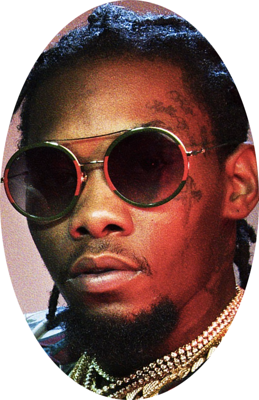

RAPLIBS


HOW IT'S MADE
Step 1
Download Audacity or any other audio software, the original song, and the instrumental of the song. Google "how to rip vocals from songs", or follow this website's tutorial (and watch the YouTube video if it gets confusing).
Step 2
Fail miserably at step 1 and find already-made acapellas online. You can check out websites such as
acapellaz.com,
acapellas4u,
DatPiff, and/or SoundCloud. I got most of mine from subreddits /r/songstems and /r/isolatedvocals because they had high quality Hip Hop acapellas (50% of the time though). However, they had little diversity and quantities of Hip Hop artists, hence most of the adlibs on here are Migos...(but also Migos is adlib-heavy anyway.)
Step 3
Open an acapella audio file in QuickTime player. Listen to the song to find the section that has your adlib. Trim (cmd+T) that section. Save it as "adlib-section". Open "adlib-section" in QuickTime Player and cmd+T trim to grab the adlib. As you trim the acapella into shorter clips, the wavelength of the acapella becomes longer so you can carefully pick out the adlib.
Step 4
Learn some HTML/CSS/JS, code your website, and badabing badaboom, you're done!!!
ABOUT ME
Allow me to reintroduce myself...my name is Hov. Just kidding, my name is Sally Tran and I'm a 3rd year studying Cognitive Science at UC Berkeley. And as you can see, I'm also a big Hip Hop fan. I was inspired to create this website while lifting to my playlist, GET HYPED GET PUMPED (embedded below, check it out!!). When I heard Travis Scott's "IT'S LIT!" in Antidote, I thought it'd be cool to highlight the subtle joys of Hip Hop music. I hope you enjoyed this website! And click on my picture for my adlib ;)